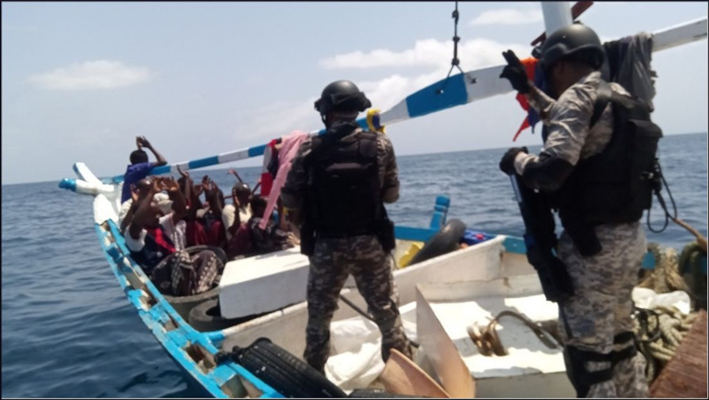

Kurzüberblick
Moderne Piraterie meint vor allem Gewalt gegen Schiffe seit dem späten 20. Jahrhundert, erfasst von IMO und IMB. Nach dem Seerechtsübereinkommen der Vereinten Nationen (UNCLOS, Art. 101) ist Piraterie eine illegale Gewalttat, Festnahme oder Plünderung zu privaten Zwecken durch die Besatzung oder Passagiere eines privaten Schiffs, gerichtet gegen ein anderes Schiff auf hoher See (bzw. außerhalb staatlicher Hoheitsgewalt). Angriffe in inneren Gewässern, Archipelgewässern oder im Küstenmeer heißen bei der IMO hingegen bewaffneter Raub gegen Schiffe (armed robbery against ships). Der Unterschied ist praxisrelevant: Auf hoher See gilt universelle Jurisdiktion; im Küstenmeer liegt die primäre Zuständigkeit beim Küstenstaat.
Ab den 1970er/1980er Jahren und verstärkt seit den 1990ern stiegen die gemeldeten Vorfälle. Höhepunkt war die somalische Piraterie um 2008–2012 (IMB: 237 Vorfälle vor Somalia 2011, dann starker Rückgang). Danach verlagerten sich die Schwerpunkte: Südostasien blieb dauerhaft aktiv, der Golf von Guinea wurde zeitweise zum gefährlichsten Raum für Entführungen, am Horn von Afrika blieben Restgefahren. Houthi-Angriffe im Roten Meer ab 2023/24 zielen oft auf Handelsschiffe, sind aber häufig politisch und milizengebunden. Sie fallen daher nicht klar unter klassische UNCLOS-Piraterie („private ends“) und werden hier nur zur Abgrenzung erwähnt.
Hotspots

Somalia / Horn von Afrika. Nach dem Staatszerfall und der Schwächung der Küstenkontrolle entwickelten Gruppen ein Lösegeldmodell: Entführung von Handelsschiffen weit hinaus in den Indischen Ozean, längere Geiselhaft, Millionenforderungen. 2011 meldete das IMB 237 Vorfälle vor Somalia; 2012 noch 75, 2013 nur 15. Internationale Marinen, Best Management Practices und private bewaffnete Teams brachen das Geschäftsmodell weitgehend. 2024 verzeichnete das IMB in Ostafrika wieder mindestens acht Vorfälle (darunter Entführungen), was zur Wachsamkeit mahnt, ohne den Peak von 2011 wiederzuerreichen.
Straße von Malakka / Südostasien. Hier dominieren oft opportunistische Boardings, Diebstahl und kurzfristige Geiselnahme, häufig in Küstengewässern (also eher armed robbery). Das IMB meldete 2024 allein in der Straße von Singapur 43 Vorfälle (2023: 37). ReCAAP und regionale Küstenwachen bleiben zentrale Ansprechpartner. Die Gefahr ist real, aber meist von anderer Qualität als die somalischen Hochsee-Entführungen.
Golf von Guinea. Westafrika zeichnete sich durch gewaltsame Boardings und Kidnap-for-Ransom aus, oft mit Bezug zu Öl- und Tankerschifffahrt. Die Vorfallzahlen sanken (IMB: 81 im Jahr 2020, 18 im Jahr 2024), doch 2024 entfielen alle vom IMB global gezählten 12 Crew-Entführungen auf diese Region. Der Rückgang ist kein Freibrief: Besatzungen bleiben besonders gefährdet.
Rotes Meer (Abgrenzung). Angriffe der Houthi-Miliz auf Handelsschiffe sind Teil eines regionalen Konflikts und oft staatlich bzw. milizenpolitisch gerahmt. Ob sie die UNCLOS-Merkmale der Piraterie erfüllen, ist umstritten. Für diese Enzyklopädie zählen sie nicht als typische moderne Piraterie, sondern als angrenzende Bedrohung der Handelsschifffahrt.
Internationale Reaktion
Seit Ende 2008 operiert EU NAVFOR Atalanta vor Somalia; die Combined Maritime Forces stellten 2009 CTF 151 auf. Dazu kamen NATO- und nationale Einsätze, der Djibouti Code of Conduct (2009) und später der Yaoundé Code of Conduct (2013) für West-/Zentralafrika. Die Schifffahrtsindustrie verbreitete Best Management Practices (Härtung, Meldeverfahren, Umwege) und setzte verbreitet private bewaffnete Sicherheitskräfte ein. IMO und UNODC (Global Maritime Crime Programme) fördern Rechtshilfe, Strafverfolgung und regionale Kapazitäten. RECAAP (seit 2006) vernetzt den Informationsaustausch in Asien.
Das Ergebnis: Somalische Piraterie brach nach 2012 ein; der Golf von Guinea zeigte in den frühen 2020ern Rückgänge bei weiter hoher Gewaltintensität pro Vorfall. Global meldete das IMB für 2024 116 Vorfälle (2023: 120). Die Lage ist beherrschbarer als auf dem Höhepunkt, aber nicht „gelöste Geschichte“. Küstenstaatliche Kapazität, Marinpräsenz und Schiffsmaßnahmen bleiben nötig.
Quellen
- United Nations – Legal Framework for the Repression of Piracy Under UNCLOS (Art. 100–101, 105): https://www.un.org/Depts/los/piracy/piracy_legal_framework.htm
- IMO – Piracy and armed robbery against ships (Definitionen UNCLOS / Res. A.1025(26)): https://www.imo.org/en/ourwork/security/pages/piracyarmedrobberydefault.aspx
- ICC Commercial Crime Services – „Somali pirate clampdown caused drop in global piracy, IMB reveals“ (15.01.2014; Zahlen 237/75/15 für 2011–2013): https://icc-ccs.org/somali-pirate-clampdown-caused-drop-in-global-piracy-imb-reveals/
- ICC International Maritime Bureau – Media Release zum Annual Piracy Report 2024 (14.01.2025; 116 Vorfälle global, Golf von Guinea 18, Singapurstraße 43, Ostafrika ≥8): https://www.steamshipmutual.com/sites/default/files/medialibrary/files/2024%20-%20Jan%20-%20Dec%20IMB%20Piracy%20and%20Armed%20Robbery%20Report%20-%20MEDIA%20RELEASE.pdf
- EEAS / EU NAVFOR – Operation Atalanta (Überblick): https://www.eeas.europa.eu/eu-navfor-somalia/european-union-naval-force-somalia-military-operation-atalanta_und_en
- Combined Maritime Forces – CTF 151 / Koordination mit EUNAVFOR: https://combinedmaritimeforces.com/
- IMO – Djibouti Code of Conduct / Yaoundé Code of Conduct (Zusammenfassung auf der IMO-Piracy-Seite, s. Quelle 2)
- UNODC – Global Maritime Crime Programme / Indian Ocean Division: https://www.unodc.org/unodc/en/piracy/indian-ocean-division.html
- ReCAAP ISC – Annual Report 2024 (regionale Asien-Zahlen): https://www.recaap.org/resources/ck/files/reports/annual/ReCAAP%20ISC%20Annual%20Report%202024.pdf
- ELIAMEP – Papastavridis, „Red Sea Attacks and the International Response“ (völkerrechtliche Abgrenzung): https://www.eliamep.gr/en/red-sea-attacks-and-the-international-response-an-international-law-insight-efthymios-papastavridis/